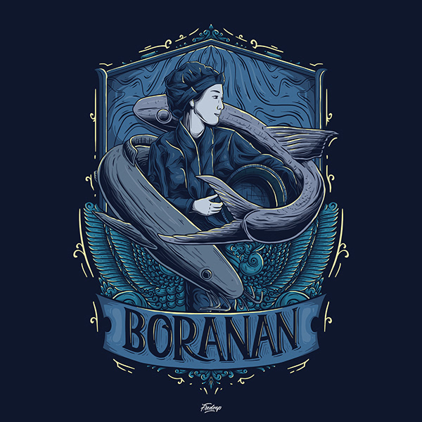
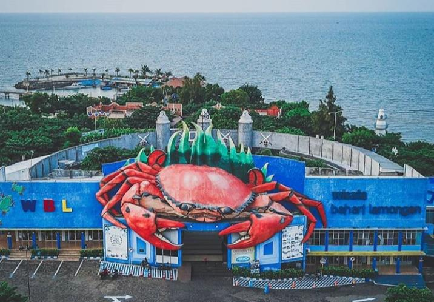
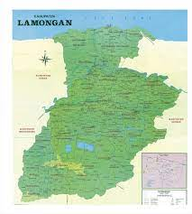

boran

Kata Boranan ini berasal dari tempat Nasi (terbuat dari Anyaman Bambu) yang digendong dengan selendang pada punggung, Nasi boranan belum banyak dikenal di luar Lamongan karena memang hanya dijual di Lamongan.
Nasi boranan, terdiri dari nasi, bumbu, lauk, rempeyek (sejenis kerupuk bahan bakunya dari tepung
beras yang dibumbui dan digoreng). Bumbu dari nasi boranan terdiri dari rempah-rempah yang sudah
dihaluskan, serta lauk yang ditawarkan oleh penjual bervariasi, diantaranya daging ayam, jeroan,
ikan bandeng, telur dadar, telur asin, tahu, tempe hingga ikan sili yang lebih mahal bila
dibandingkan dengan lauk-lauk lainnya
wisata

Wisata Bahari Lamongan atau disingkat WBL adalah tempat wisata bahari yang terletak di Kecamatan Paciran,
Kabupaten Lamongan, Jawa Timur. Tempat wisata ini dibuka sejak 14 November 2004. Wisata Bahari
Lamongan dikelola oleh PT Bumi Lamongan Sejati, sebuah perusahaan patungan Pemkab Lamongan
dengan PT Bunga Wangsa Sejati.[1] Beberapa wahana unggulan tempat wisata ini antara
lain Istana Bawah Laut, Gua Insectarium, Space Shuttle, Anjungan Wali Songo,
Texas City, Paus Dangdut, Tembak Ikan, Rumah Kaca, serta Istana Bajak Laut
geografi

Lamongan (Jawa: Hanacaraka: ꦭꦩꦺꦴꦁꦔꦤ꧀ Pegon: لامَوڠان) adalah sebuah kabupaten di Provinsi Jawa Timur, Indonesia.
Pusat pemerintahan Kabupaten Lamongan berada di Kecamatan Lamongan yang terletak 49 km barat Kota Surabaya.
Kabupaten Lamongan dilintasi Jalan Nasional Jakarta-Surabaya, merupakan salah satu wilayah yang masuk
dalam kawasan metropolitan Surabaya, yaitu Gerbangkertosusila
Secara geografis Kabupaten Lamongan terletak pada 6°51’54” - 7°23’06” Lintang Selatan dan 112°33’45” - 112°33’45” Bujur Timur.
Kabupaten Lamongan memiliki luas wilayah kurang lebih 1.812,8 km² atau ±3.78% dari luas wilayah Provinsi Jawa Timur. Dengan
panjang garis pantai sepanjang 47 km, maka wilayah perairan laut Kabupaten Lamongan adalah seluas 902,4 km², apabila
dihitung 12 mil dari permukaan laut